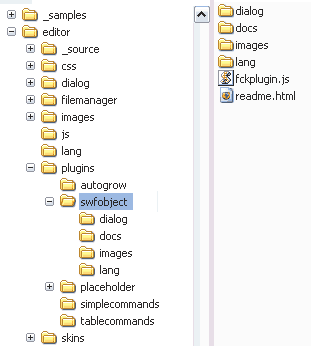

This is a dialog-based plugin to replace the default flash insertion in FCKeditor (using <embed>) with SWFObject 2 (with the dynamic publishing method, <script>)
Besides generating the code with SWFObject, the insertion dialog allows to set the allowscriptaccess, wmode and allowfullscreen Flash parameters, and the posibility to add any flashvars that you need.
Alfonso Martínez de Lizarrondo
Get the latest version and/or updated info
Extract the contents of the zip in you plugins directory, so it ends up like
this

editor\ ... js\ lang\ plugins\ ... swfobject fckplugin.js readme.html dialog\ docs\ images\ lang\ ... skins\
Now add in your fckconfig.js or custom js configuration
file the following line:
FCKConfig.Plugins.Add( 'swfobject', 'en,es') ;
This plugin replaces the default flash dialog, just use the normal 'Flash' button.
These are the possible config values:
All these values can be set in the fckconfig.js file, a custom js configuration file, or at the moment of the creation of the FCKeditor instance using any language.
Now empty the cache of your browser and reload the editor, the new Flash dialog will be shown.
Besides generating the code with SWFObject, the insertion dialog allows to set the allowscriptaccess, wmode and allowfullscreen Flash parameters, and the posibility to add any flashvars that you need.
Since version 1.4, pasting embedding code generated by external sites as YouTube
<object width="425" height="344">
<param name="movie" value="http://www.youtube.com/v/nj2hewPBQh0&hl=es&fs=1"></param>
<param name="allowFullScreen" value="true"></param>
<embed src="http://www.youtube.com/v/nj2hewPBQh0&hl=es&fs=1" type="application/x-shockwave-flash" allowfullscreen="true" width="425" height="344"></embed>
</object>
does generate the proper code in FCKeditor
If you find this plugin useful, consider making a donation so it can be further improved, any amount can help to keep the development running.
If you need some special feature for this plugin, or if you need any other kind of plugin for FCKeditor then contact me and we can discuss it
FCKeditor is © FredCK.com
The SWFObject is Copyright © 2007-2008 Geoff Stearns, Michael Williams, and Bobby van der Sluis